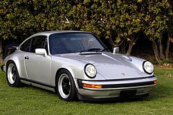
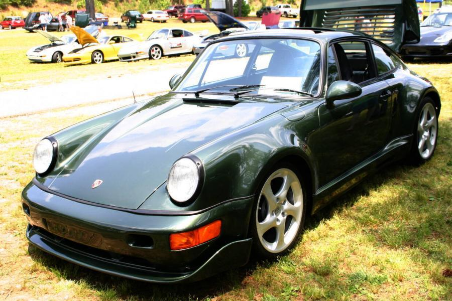
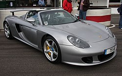
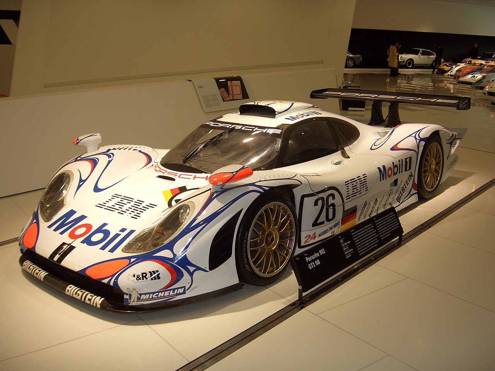
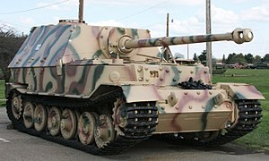

.png)
История
К моменту выпуска первого автомобиля под своим именем Фердинанд Порше успел накопить немалый опыт. Основанное им 25 апреля 1931 года предприятие Dr. Ing. h.c. F. Porsche GmbH под его началом уже успело поработать над такими проектами, как 6-цилиндровый гоночный Auto Union и Volkswagen Käfer, ставший одним из самых продаваемых автомобилей в истории. В 1939 году был разработан первый автомобиль компании — Porsche 64, который стал прародителем всех будущих Porsche. Для постройки этого экземпляра Фердинанд Порше использовал многие компоненты от Volkswagen Käfer.
В течение Второй мировой войны 1939—1945 годов компания занималась выпуском военной продукции — штабных автомобилей и амфибий. Фердинанд Порше принимал участие в разработке немецких тяжёлых танков «Тигр P», а также сверхтяжёлого танка «Маус».
С момента возвращения в Штутгарт все кузовные панели изготавливались из стали, от алюминия отказались. Завод начинал с купе и кабриолетов и 1100-кубовых моторов мощностью всего в 40 лошадиных сил(29,42 кВт), но скоро выбор расширился: к 1954 году продавались версии 1100, 1300, 1300A, 1300S, 1500, и 1500S. Конструкция постоянно улучшалась: объём и мощность двигателей продолжили свой рост, появились дисковые тормоза на всех колёсах и синхронизированная КПП, были предложены новые варианты кузовов — хардтопы и родстеры. Агрегаты от Volkswagen постепенно заменялись на собственные. Например, в период выпуска серии 356А (1955—1959) уже можно было заказать двигатель с четырьмя распредвалами, двумя катушками зажигания, и другими оригинальными компонентами. Серию А сменила B (1959—1963), а её — C (1963—1965). Общий объём выпуска всех модификаций составил немногим более 76 тысяч.
Параллельно создавались модификации для гонок (550 Spyder, 718 и др.).
В 1951 году Фердинанд Порше в возрасте 75 лет скончался от сердечного приступа — его здоровье было подорвано пребыванием в тюрьме.
В конце 1950-х был изготовлен прототип Porsche 695. У руководства компании на этот счёт не было единого мнения: 356-й успел заработать себе хорошую репутацию, поэтому для небольшой семейной фирмы Porsche, переход на новую модель был связан с повышенным риском. Но конструкция образца 1948 года устаревала всё быстрее и резервов для её обновления почти не оставалось. Поэтому в 1963 году на автосалоне во Франкфурте был представлен Porsche 911. Основные моменты в конструкции остались теми же (заднее расположение оппозитного мотора и задний привод), но это уже был современный спортивный автомобиль с классическими линиями кузова в духе Porsche 356. Автором дизайна стал Фердинанд Александр «Бутци» Порше, старший сын Ферри Порше.
Модели




Интересные факты
Именно Порше придумал тяжёлое самоходное орудие Ferdinand, принимавшее активное участие в военных действиях как на Восточном, так и на Западном фронте. Сверхтяжёлые танки «Королевский тигр» и «Маус» — тоже его работа.
.jpg) Модель 356 — первая в истории Porsche, но самая главная машина — это, конечно же, 911. Она появилась осенью 1963-го на Парижском автосалоне и называлась немного иначе — Porsche 901.
Модель 356 — первая в истории Porsche, но самая главная машина — это, конечно же, 911. Она появилась осенью 1963-го на Парижском автосалоне и называлась немного иначе — Porsche 901.